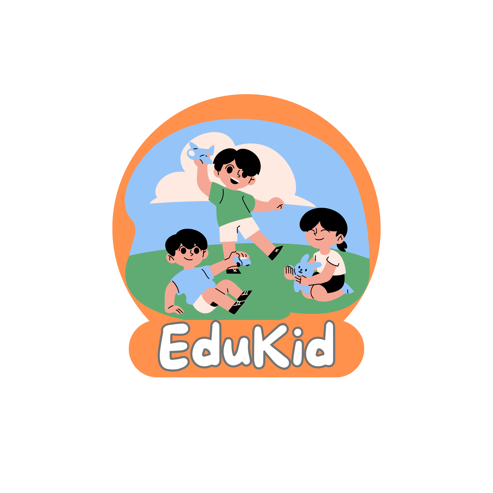
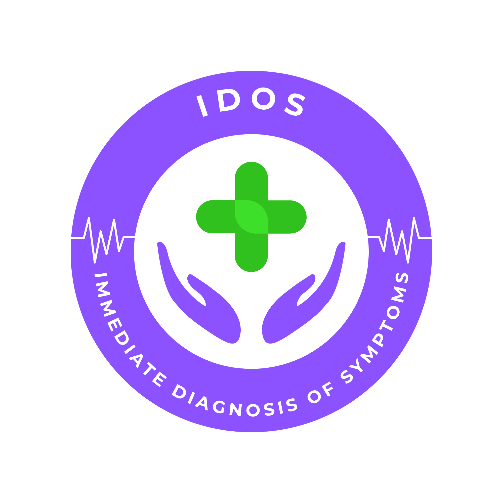
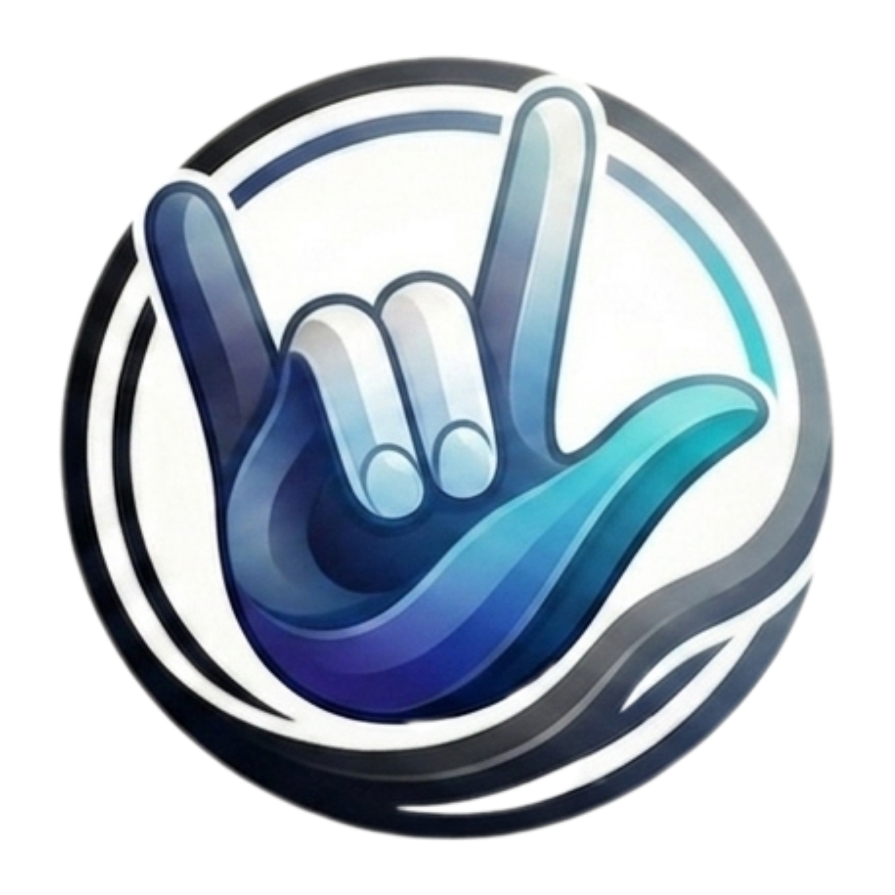
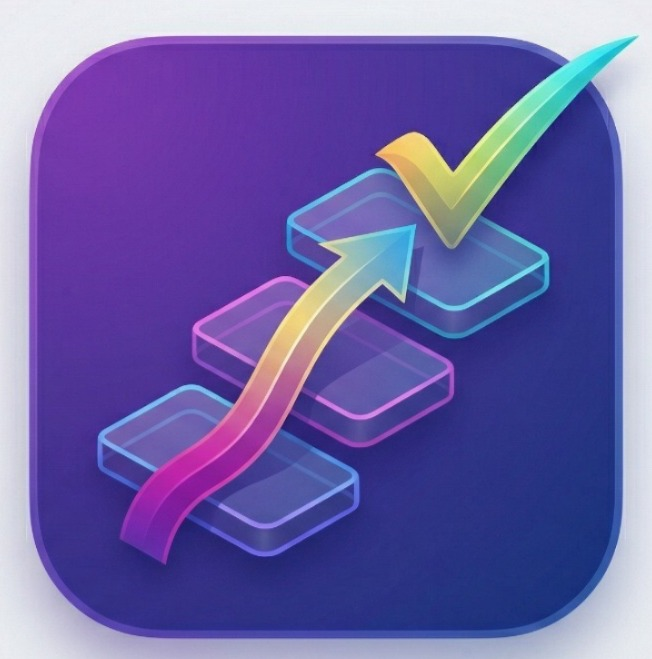
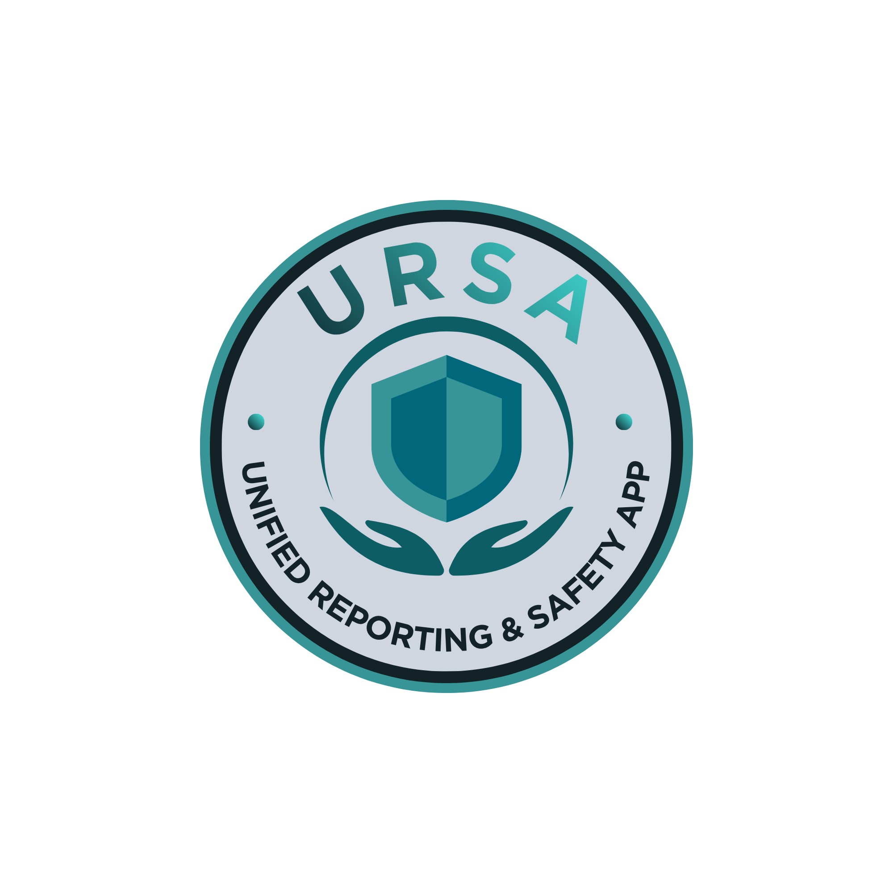

مشاريع الفريق
استكشف أهم المشاريع التقنية التي قام بها أعضاء الفريق في مجالات البرمجة، الذكاء الاصطناعي، الأمن السيبراني، التصميم وغيرها.
موقع فريق الأنامل الرقمية
برمجة الويبالموقع الذي تتصفحه حالياً، تم تصميمه وتطويره بالكامل من قبل أعضاء الفريق باستخدام HTML, CSS, وJavaScript. يحتوي الموقع على جميع معلومات الفريق وأنشطته وإنجازاته.
 مكتمل
مكتمل
منصة DTES العالمية المعتمدة
برمجة الويبمنصة معتمدة من مديرية التربية والتعليم بالقليوبية، تهدف إلى تطوير العملية التعليمية عبر تقديم أدوات وموارد تعليمية متقدمة للمعلمين والطلاب.

مكتملمنصة KID-EDU
برمجة الويبمنصة تعليمية تفاعلية تساعد أطفال رياض الأطفال على استيعاب المناهج بطريقة ممتعة وتفاعلية.

مكتملمنصة IDOS
الذكاء الاصطناعي | ويبمنصة طبية تعتمد على الذكاء الاصطناعي لمساعدة المرضى في الحصول على تشخيص أولي بناءً على الأعراض المدخلة.

مكتملمنصة AI-SLI
الذكاء الاصطناعي | ويبمنصة مبتكرة لتحسين التواصل بين الأشخاص وذوي الهمم باستخدام تقنيات الذكاء الاصطناعي وترجمة لغة الإشارة.
 مكتمل
مكتمل
QYS | منصة القليوبية للشباب والرياضة
الشباب والرياضةمنصة متطورة لمديرية الشباب والرياضة بالقليوبية، تنظيم الأنشطة، حجز الملاعب، وإدارة البطولات الإلكترونية. تطوير كامل من فريق الأنامل الرقمية.

مكتملTaskFlow
تطبيقات الجوال | ويبتطبيق لإدارة المهام والمشاريع مع مزامنة وتنبيهات ذكية وتقارير أداء متقدمة.

مكتملURSA
الذكاء الاصطناعيمنصة رقمية ذكية لتصنيف البلاغات المجتمعية عبر الذكاء الاصطناعي، تحديد الأولويات للحفاظ على صورة مصر وتعزيز السياحة.
 مكتمل
مكتمل
Bekya
الاستدامةمنصة لتحويل المواد القابلة للتدوير إلى نقاط واستخدامها لدى الشركاء، إغلاق الحلقة البيئية.
 مكتمل
مكتمل
VQ - منصة شكاوى القليوبية
الذكاء الاصطناعيأرشفة وتحليل الشكاوى، تصنيف آلي وتوجيهها للجهات المختصة ومتابعة الحل.
 قيد التطوير
قيد التطوير
الوظائف الطلابية - تمكين الخريجين
برمجة الويبمنصة لتمكين الخريجين والطلاب من إيجاد فرص عمل وتدريبات مهنية وربطهم بسوق العمل.
 قيد التطوير
قيد التطوير
Egypt Tourism Enhancement
السياحة | ذكاء اصطناعيمنصة شاملة لتحسين السياحة في مصر، دليل سياحي ذكي، نظام حجز وتقييمات.